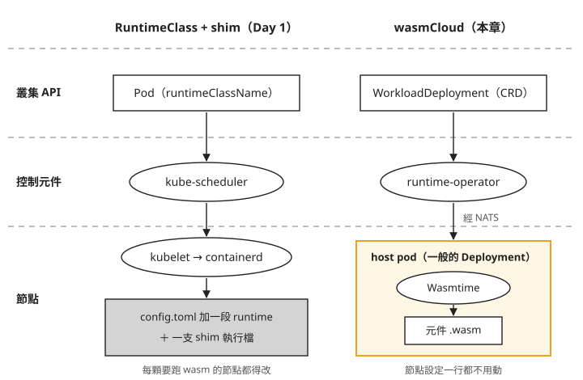
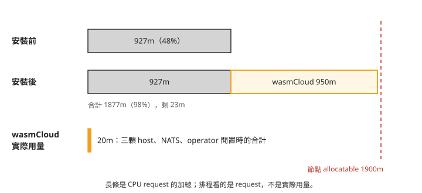
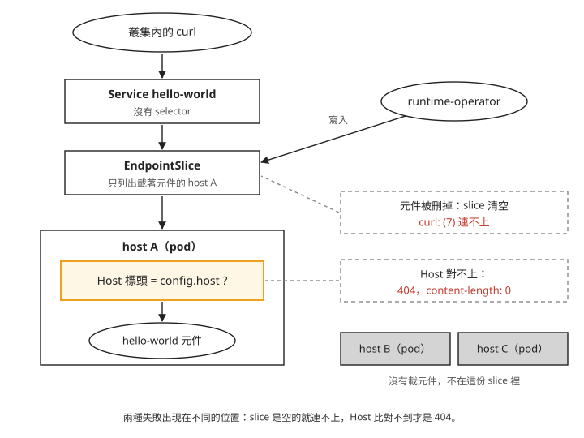

Day 2: wasmCloud——在一般 pod 裡執行 wasm 元件，與不改節點的代價¶
假設你的團隊要讓客戶上傳的 wasm 規則在叢集上執行，就像 Day 0 那個收單規則的例子。照 Day 1 走過的 RuntimeClass 路線，每顆要跑 wasm 的節點都得多放一支 shim 執行檔，再在 containerd 的 config.toml 加一段設定。可是節點映像由 AKS 管理，節點升級或汰換時拿到的是一台從映像重新開出來的 VM，手動加上去的東西要再做一次。這時有人推薦 wasmCloud，理由是它完全不用動節點。
這一章把 wasmCloud 裝進 Day 1 建好的叢集，跑起第一個 wasm 元件，再拿 Day 1 存下的節點基準逐份比對，確認節點真的沒被改過。接著看它把代價放在哪裡：要先預留多少節點資源、Kubernetes 的哪些工具看不到元件，以及出問題時錯誤訊息會在哪裡。
讀完之後，看到一套宣稱「不用改節點」的 wasm 方案，你能判斷元件實際在哪個行程裡執行、Kubernetes 的工具還看得到什麼，以及要替它預留多少資源。
wasmCloud 為什麼不用改節點¶
wasmCloud 把 wasm 放在叫做 host 的普通 Pod 裡執行。host 容器裡的 wasm 執行引擎 Wasmtime 負責載入 wasm component（元件）；元件除了 Wasm 模組，還宣告可供呼叫、以及需要宿主提供的介面。
元件用 WorkloadDeployment 描述，它是透過 CRD 擴充到 Kubernetes API 的物件種類。runtime-operator 是持續觀察這些物件、讓實際狀態符合設定的控制程式，負責決定元件放在哪顆 host，並維護記錄 Service 後端位址的 EndpointSlice。operator 與 host 透過開源訊息系統 NATS 傳遞指令。
下圖左邊是 Day 1 追過的 RuntimeClass 路線，右邊是 wasmCloud；由上往下依序是叢集 API 裡的物件、負責決定位置的控制元件，以及節點上真正執行 wasm 的地方。

從圖的最底層可以看到，Day 1 的 wasm 由 containerd 透過 shim 啟動，所以節點得先有那支 shim 和對應的設定。wasmCloud 的元件則由 host 裡的 Wasmtime 執行，containerd 只需用節點原本就有的 runc 啟動 host 容器。
接下來用實際輸出確認圖右邊的各個元件，最後比對本章追蹤的節點設定與執行檔清單。
步驟 1：確認 Day 1 的基準還能用¶
最後要證明「安裝 wasmCloud 沒有改節點」，做法是把安裝後的節點設定跟 Day 1 存下的基準比對。這個比對有一個前提：基準反映的是節點映像本身，而不是 Day 1 那一台 VM 剛好的狀態。
AKS 的節點可能因映像升級或回收而被替換；本課 stop/start 的紀錄也遇到節點名稱改變，但不能假設每次都一定替換 VM。安裝前先取目前節點的資料，跟 Day 1 的基準比對。若不同，要先確認節點映像或設定是否已改變。
如果 Day 1 已停機，先啟動叢集並重新取得連線設定。<resource-group> 與 <cluster> 沿用 Day 1 的值；把 kubeconfig 放在本課專用檔案：
az aks start -g <resource-group> -n <cluster>
az aks get-credentials -g <resource-group> -n <cluster> --file ~/.kube/wasm-lab.conf --overwrite-existing
export KUBECONFIG=~/.kube/wasm-lab.conf
kubectl wait --for=condition=Ready node --all --timeout=10m
Day 1 的 node-shell 是 DaemonSet。沿用 node-shell.yaml，確認它已在目前節點建立 Pod，再取得實際 Pod 名稱。下面的 nodesh 只是把「exec 進 node-shell，再用 nsenter 進節點」包成一個函式，bash 和 zsh 都能用：
kubectl apply -f node-shell.yaml
kubectl -n wasmlab rollout status ds/node-shell --timeout=5m
NODE_SHELL_POD=$(kubectl -n wasmlab get pod -l app=node-shell -o jsonpath='{.items[0].metadata.name}')
nodesh() { kubectl -n wasmlab exec "$NODE_SHELL_POD" -- nsenter -t 1 -m -- "$@"; }
nodesh cat /etc/containerd/config.toml > pre-containerd-config.toml
nodesh containerd config dump > pre-containerd-config-dump.toml
kubectl get node -o jsonpath='{.items[0].status.runtimeHandlers}' | python3 -m json.tool > pre-node-runtimehandlers.json
nodesh sh -c 'ls -la /usr/bin/containerd-shim* /usr/bin/runc' > pre-shim-binaries.txt
kubectl get runtimeclass -o name > pre-runtimeclasses.txt
前四份對應 Day 1 存下的四份基準；最後一份是叢集上現有的 RuntimeClass 清單，留給步驟 7 比對安裝前後。下面的 <Day1 基準> 代表你存放 Day 1 基準檔的目錄，檔名若不同，換成自己的：
$ diff <Day1 基準>/baseline-containerd-config.toml pre-containerd-config.toml
→ exit=0
$ diff <Day1 基準>/baseline-containerd-config-dump.toml pre-containerd-config-dump.toml
→ exit=0
$ diff <Day1 基準>/baseline-node-runtimehandlers.json pre-node-runtimehandlers.json
→ exit=0
$ diff <Day1 基準>/baseline-shim-binaries.txt pre-shim-binaries.txt
→ exit=0
本課四份都是 exit=0，表示這兩次取樣的基準相同。後續安裝前後的差異，才不會混入先前節點替換造成的改變。這只涵蓋列出的檔案與欄位，不是整台 VM 的完整快照。
步驟 2：找到正確的安裝入口¶
本章適用 wasmCloud v2.6.1，Kubernetes 安裝入口是 oci://ghcr.io/wasmcloud/charts/runtime-operator。請使用 2.6.1 的 chart 與下方的本機 values 檔，讓安裝版本與本章使用的欄位一致。
overlay：疊在 chart 預設值上的設定¶
Helm 的 chart 是一組 Kubernetes 資源範本，values 是提供給範本的設定。overlay 就是額外的一份 values 檔，用來覆寫 chart 的預設值；安裝後這一組資源在 Helm 裡稱為 release。這一章把 release 命名為 wasmcloud。
本課使用以下設定：關閉已棄用的 runtime-gateway，HTTP 改由 operator 維護 EndpointSlice；host 則開 3 個副本。把下面內容存成 values.local.yaml，避免直接讀取會持續變更的 main 分支設定。設定如下：
gateway:
enabled: false
runtime:
hostGroups:
- name: default
replicas: 3
service:
type: ClusterIP
webgpu:
enabled: true
http:
enabled: true
port: 80
resources:
requests:
memory: "64Mi"
cpu: "250m" # 0.25 CPU cores
limits:
memory: "512Mi"
cpu: "500m" # 0.5 CPU cores
hostGroups 底下的 default 是一組 host，叫做 host group，同一組 host 由同一個 Deployment 管理。記住兩個數字：replicas: 3，以及每顆 host requests.cpu: 250m。步驟 3 會看到它們在一顆 2 vCPU 的節點上代表什麼。
步驟 3：安裝，清點它放進叢集的東西¶
安裝時應在下方 helm install 指令加上 --version 2.6.1，固定 chart 版本；這個參數的用法見 Helm 官方文件。以下保留原始實跑指令，該次拉取的是 2.6.1，但指令未固定版本；修正後的寫法本課沒有實跑。
$ helm install wasmcloud oci://ghcr.io/wasmcloud/charts/runtime-operator \
--namespace wasmcloud --create-namespace -f values.local.yaml
STATUS: deployed
安裝完成後清點一下：5 個 CRD、3 個 Deployment、3 個 ClusterIP Service、3 個 NetworkPolicy，以及一組 RBAC。沒有任何 DaemonSet、webhook、PVC 或 LoadBalancer。DaemonSet 會在符合條件的節點維持 Pod，本章安裝沒有這類元件。不過有沒有 DaemonSet 本身不足以證明節點是否被修改，後面還會檢查權限、掛載與檔案差異。
三個 Deployment 各做一件事：
runtime-operator：管理前面介紹的元件部署與路由。nats：提供 operator 與 host 之間的訊息傳遞；chart 內建的是單顆、資料不落地的版本，正式環境通常會改接外部的 NATS。hostgroup-default：就是上一節圖上的 host，3 個 replica。映像是ghcr.io/wasmcloud/wash:2.6.1，一個普通的容器映像。
operator 和 host 啟動時都要連 NATS，NATS 還沒好就直接結束、交給 kubelet 重啟。所以剛裝完時 kubectl get pods 可能看到重啟；本課紀錄是 2 次，約一分鐘後恢復，但次數與時間依 NATS 就緒情況而異，見疑難排解：啟動時連不上 NATS。
預留的 CPU 與實際用量¶
三個 Deployment 都設了 resources，chart 的 values.yaml 註解還寫出了閒置時的量測值：
| Deployment | requests | limits | values.yaml 註解裡的實測值 |
|---|---|---|---|
runtime-operator |
cpu 100m / mem 64Mi | mem 192Mi | Idle ~19Mi (profiled),limit 留給 informer cache |
nats |
cpu 100m / mem 64Mi | mem 128Mi | Idle ~6Mi (profiled) |
hostgroup-default |
cpu 250m / mem 64Mi | cpu 500m / mem 512Mi | overlay 覆寫 |
加起來是 3 顆 host 各 250m，加上 operator 與 NATS 各 100m，共 950m。Day 1 的叢集只有一顆 2 vCPU 的節點（Standard_D2as_v5），可分配給 pod 的 CPU（allocatable）是 1900m。在節點上用 kubectl describe node 看「Allocated resources」，安裝前後的 CPU request 分別是：
# 安裝前
cpu 927m (48%) memory 994Mi (17%)
# 安裝後
cpu 1877m (98%) memory 1314Mi (22%)
↑ 節點 allocatable 是 1900m,剩 23m
再看這 950m 換到的實際用量，這時還沒部署任何元件：
把這三個數字畫在同一條尺上，長條長度是 CPU request 的加總：

圖上要看的是右端：安裝後只剩 23m，下一個要求超過 23m CPU 的 pod 就會 Pending。而 request 是實際用量的 47 倍。排程器只看 request，不看實際用量，所以這段空間雖然閒著，別的 pod 也排不進來。
這不代表 chart 設錯了。每顆 host 250m 是替「host 上跑滿元件」準備的，values.yaml 的註解也說要依預期的元件密度調整。問題在 overlay：replicas: 3 是為了在本機的 kind 叢集上示範元件在多顆 host 之間排程，README 卻把它當成一般用途的建議設定。在小節點上安裝時，要自己決定 host 的數量，見疑難排解：裝完 wasmCloud 後其他 pod 排不進來。本章後面的步驟照 3 顆 host 的狀態示範，因為「元件只在其中一顆上」正是步驟 5、6 要觀察的現象。
chart 沒有提供的五個欄位¶
另一件要先知道的事，是 chart 沒有提供哪些設定。在 wasmCloud 主 repo 的 v2.6.1 原始碼裡搜尋排程相關的五個欄位：
$ grep -iE "toleration|affinity|nodeSelector|topologySpread|priorityClass" \
charts/runtime-operator/values.yaml charts/runtime-operator/templates/runtime/deployment.yaml
← 五個關鍵字,兩個檔案,零命中
tolerations、affinity、nodeSelector、topologySpreadConstraints、priorityClassName 在 values.yaml 和 Deployment 範本裡一次都沒出現，連覆寫的入口都沒有。若節點有 NoSchedule taint，且 host Pod 缺少對應的 toleration，host 就無法排入該節點；PreferNoSchedule 則是盡量避免排入的偏好，兩者的差異見 Kubernetes 官方文件。chart 也沒有設定讓 host 分散到不同節點的條件或優先權保護。多節點排程與 toleration 的操作留到 Day 3。
步驟 4：檢查 host pod 有沒有碰到節點¶
現在用實際輸出確認開頭那張圖的右半邊。先用 Day 1 的文字寫法，把兩條路線再寫一次。Day 1 的路線是這樣：
Pod spec: runtimeClassName ──▶ RuntimeClass 物件的 handler
│
kubelet 把 handler 傳給 CRI
│
containerd 查 config.toml 的 runtimes.<handler>
│
起對應的 shim 二進位檔
每一個箭頭都發生在節點上，最後一格是磁碟上的一個檔案。要跑 wasm，就得在節點上多放一支 shim，並在 config.toml 加一段指向它，這是 Day 6 的工作。
wasmCloud 在第一個箭頭之前就分開了：
WorkloadDeployment(CRD) ──▶ runtime-operator ──NATS──▶ host pod(普通 Deployment)
│
host 行程裡的 Wasmtime
│
把 .wasm bytecode 載進來執行
元件不會變成一顆 Pod。containerd 在整條路徑上只參與一件事：把 ghcr.io/wasmcloud/wash:2.6.1 這個普通容器映像拉下來，跑成 host pod，而這件事用預設的 runc 就能完成。下面用三段輸出確認。
以下帶 … 的區塊是觀察摘要，不是可直接貼上的完整命令。第一段，在 node-shell 裡用 crictl pods --namespace wasmcloud -o json 問 containerd，wasmCloud 的每一顆 pod 用的是哪個 runtime handler：
$ nsenter -t 1 -m -- crictl pods --namespace wasmcloud -o json | …
hostgroup-default-… runtimeHandler=''
hostgroup-default-… runtimeHandler=''
hostgroup-default-… runtimeHandler=''
runtime-operator-… runtimeHandler=''
nats-… runtimeHandler=''
Day 1 用同一條指令看過三種值：指定了 runc 的是 'runc'，指定了 untrusted 的是 'untrusted'，什麼都沒指定的是 ''。wasmCloud 的五顆 pod 全部是第三種，跟一般的 pod 走同一條預設路徑。
第二段，看 host 的 Deployment 有沒有要求任何節點權限：
$ kubectl -n wasmcloud get deploy hostgroup-default -o json | …
hostPID / hostNetwork / hostIPC : None None None
privileged : None
securityContext : {"allowPrivilegeEscalation": false, "capabilities": {"drop": ["ALL"]},
"readOnlyRootFilesystem": true, "runAsNonRoot": true}
volumes : [oci-cache(emptyDir), tmp(emptyDir),
runtime-cert(secret), data-cert(secret)] ← 零個 hostPath
hostPID、hostNetwork、hostIPC、privileged 都沒有設，四個 volume 是兩個 emptyDir 加兩個 Secret，沒有 hostPath。Day 1 的 node-shell 正好相反，要 hostPID: true、privileged: true 再掛 hostPath: / 才看得到節點。這些欄位說明本章的 host 沒有要求直接掛載主機檔案系統或使用特權；再搭配安裝前後的檔案比較，才能判斷這次安裝沒有改動追蹤的設定。
第三段，看節點本身有沒有被加上標籤、註記或 taint：
$ kubectl get node -o json | …
labels containing 'wasm' or 'spin' : []
annotations containing 'wasm' : []
taints : None
這一點到 Day 6 會相反。SpinKube 的 runtime-class-manager 會替裝好 shim 的節點打標籤，所以 Day 1 的「寫不寫 scheduling，handler 不存在時的失敗不同」才提醒 Day 6 的 RuntimeClass 要帶 scheduling.nodeSelector。節點標籤可用來表示能力，也可能只是管理分類；單靠標籤不能判定是否安裝 runtime。應同時檢查安裝元件的指令、權限、hostPath 與節點檔案差異。
後續建立 manifest 與保存 post- 快照前，請回到步驟 1 保存 pre- 快照的原工作目錄；步驟 3 曾切進 wasmCloud 原始碼目錄。步驟 7 的相對檔名比對需要這些快照放在同一目錄。
兩條路線並排¶
| Day 1 / Day 6:RuntimeClass + containerd shim | Day 2:wasmCloud host | |
|---|---|---|
| wasm 元件對 Kubernetes 來說是什麼 | 一顆 Pod（有 IP、QoS、probe、kubectl logs） |
一個 CRD 物件；元件不是獨立 Pod，無法直接取得每個元件的 Pod 指標 |
| 誰決定它跑在哪 | kube-scheduler 決定 Pod 所在節點 | kube-scheduler 排 host Pod；wasmCloud 再決定元件放在哪顆 host |
| 誰真的執行它 | containerd → shim → Wasmtime | host pod 行程裡的 Wasmtime |
| 節點要不要改 | 要：shim 執行檔、config.toml，通常還要標籤 |
不用 |
| 隔離邊界 | 每個元件一個 sandbox，含 cgroup 與 namespace | 同一顆 host pod 內的元件共用一個 cgroup，彼此之間靠 wasm 的能力模型隔離 |
| 資源限制粒度 | 每個元件 | 每顆 host，元件之間沒有 Kubernetes 層的上限 |
| Kubernetes 工具 | 以 Pod／Deployment 為對象；HPA、PDB 等仍須另驗 | 可管理 host Pod；元件不是獨立 Pod，不能直接套用同樣的 Pod 管理方式 |
| 升級風險落在哪 | 節點映像與 containerd 版本，例如 Day 1 的「containerd 2.x 的設定路徑不同」 | wasmCloud 自己的控制元件，多一套 NATS 要維護 |
整張表可以收成一句話：shim 路線把 wasm 放進 Kubernetes 原本的 Pod 模型裡，代價是要改節點；wasmCloud 在 Kubernetes 上面另外加了一層排程，節點不用改，代價是 Kubernetes 的工具只看得到 host pod，看不到裡面的元件。步驟 5、6 會看到三個具體的例子。
表中「元件共用一個 cgroup」是從 pod spec 和架構推論的，本課沒有實際跑兩個元件去測它們之間的隔離強度。
步驟 5：部署第一個元件¶
以下用 WorkloadDeployment 描述元件，搭配一個 Service 讓叢集內可以呼叫它：
cat > hello-world.yaml <<'EOF'
apiVersion: v1
kind: Service
metadata: { name: hello-world, namespace: wasmcloud }
spec:
type: ClusterIP # the upstream sample uses NodePort; AKS NSGs block 30000-32767
ports: [ { name: http, port: 80, protocol: TCP } ]
# no selector — see below
---
apiVersion: runtime.wasmcloud.dev/v1alpha1
kind: WorkloadDeployment
metadata: { name: hello-world, namespace: wasmcloud }
spec:
replicas: 1
template:
spec:
hostSelector: { hostgroup: default }
kubernetes: { service: { name: hello-world } }
components:
- name: hello-world
image: ghcr.io/wasmcloud/components/hello-world:0.1.0
hostInterfaces:
- namespace: wasi
package: http
interfaces: [ incoming-handler ]
config: { host: hello-world.wasmcloud.svc.cluster.local }
EOF
kubectl apply -f hello-world.yaml
manifest 裡有兩個地方跟一般的 Deployment 加 Service 不同。
第一個是 hostInterfaces 底下的 config.host。它是 HTTP Host 標頭的比對值：host 收到請求時，會拿請求的 Host 標頭去找哪個元件綁定了這個值，這種做法叫虛擬主機路由。所以它要填呼叫端實際使用的網址，這裡是 Service 的 FQDN。官方範例寫的是 localhost，因為範例是給本機 kind 叢集用的；照抄的話會拿到一個沒有任何內容的 404，可在後面的錯誤情境練習觀察這個差異。
第二個是 Service 沒有 selector，這是刻意的。一般 Service 靠 selector 找出符合標籤的 Pod 當後端，但元件不是 Pod，沒有標籤可以選。wasmCloud 改由 operator 直接寫這個 Service 的 EndpointSlice，只列出真正載著這個元件的 host：
$ kubectl -n wasmcloud get endpointslice
NAME PORTS ENDPOINTS
hello-world-… 80 <host-a> ← 只有一個,元件在那顆 host 上
hostgroup-default-… 80 <host-a>,<host-b>,<host-c> ← 三顆 host 都在
hello-world 這份 slice 只有一個位址，hostgroup-default 那份則列出全部三顆 host。Service 和 kube-proxy 照常運作，只是「哪些後端算數」改由 operator 決定。沒有 selector 的 Service 搭配外部維護的 EndpointSlice，是 Kubernetes 正式支援的用法。
下圖是一個請求從叢集內送出後經過的路徑，也標出兩種失敗分別發生在哪一層：

照著圖由上往下看：請求先經過 Service 與 EndpointSlice，這兩層出問題時是連不上；到了 host A 裡面才比對 Host 標頭，比對失敗時連線是成功的，回的是 404。
元件不是 Pod¶
部署元件之後，數一下 wasmcloud 命名空間的 pod：
$ kubectl -n wasmcloud get pods --no-headers | wc -l
5 ← 部署前也是 5
$ kubectl -n wasmcloud get workloaddeployment,workloadreplicaset,workload
NAME REPLICAS READY
workloaddeployment/hello-world 1 True
NAME REPLICAS READY
workloadreplicaset/hello-world-748fb64f5c 1 True
NAME READY
workload/hello-world-748fb64f5c-7bb6b5cb69 True
這裡統計的是 wasmCloud 的五顆 Pod，不包含另外建立的 curler；元件部署前後這五顆沒有增加。多出來的是三層 wasmCloud 自己的物件：WorkloadDeployment → WorkloadReplicaSet → Workload。這三層刻意對應 Deployment → ReplicaSet → Pod，連名稱後面的 hash 都照同樣的規則產生，讓熟悉 Kubernetes 的人一看就懂。不過它們不是 Kubernetes 原生的物件，HPA、PDB、kubectl rollout 都無法套用在上面。這是步驟 4 說「工具看不到元件」的第一個例子：kubectl get pod 的數量不會隨元件增減。
送一個請求¶
下面的請求從叢集內一顆裝了 curl 的 pod（curler）送出，用任何含 curl 的映像建一顆即可。它若放在 wasmcloud 命名空間，數 pod 時記得扣掉它。
$ kubectl -n wasmcloud exec curler -- curl -sS -D- http://hello-world.wasmcloud.svc.cluster.local/
HTTP/1.1 200 OK
transfer-encoding: chunked
Hello from wasmCloud!
200 OK，回應內容是 Hello from wasmCloud!。一個 wasm 元件在叢集上回應了 HTTP 請求，而叢集裡沒有因此多出任何 pod。
步驟 6：元件有多大、起多快、用多少記憶體¶
元件和容器映像一樣放在 OCI registry 上。直接看它的 manifest：
$ curl …/v2/wasmcloud/components/hello-world/manifests/0.1.0
"config": { "mediaType": "application/vnd.wasm.config.v0+json", "size": 469 },
"layers": [
{ "mediaType": "application/wasm", "size": 224241 } ← 219 KiB,單一 layer
]
mediaType 是 application/wasm，只有一層，大小 219 KiB。容器映像的 layer 是打包好的 rootfs（tar+gzip），這裡沒有 rootfs、沒有 libc，也沒有 base image，只有一個 wasm 檔。Day 5 比較映像大小時會再用到這個數字。
啟動時間分兩個尺度量。第一個看 host 自己的 log，從開始拉取元件到元件啟動；第二個從 kubectl apply 開始，在叢集內每 0.2 秒送一次請求，量到第一個 HTTP 200 為止：
# host 內部:從拉取元件到 workload 起來
05:47:14.466 WARN pull_component{reference=…hello-world:0.1.0}
05:47:14.997 INFO Starting workload
→ 531 ms
# 端到端:kubectl apply 到第一個 HTTP 200(叢集內每 0.2s 輪詢)
attempts=7 elapsed_sec=3.63
host 內部是 531 ms，端到端是 3.63 秒。兩個量測涵蓋的範圍不同，後者還包含控制器處理、路由更新與輪詢等待。本課沒有分別量測各階段，不能把差額指定給其中某個元件。
這兩個數字都不能當成「wasm 的冷啟動時間」。前者包含從 registry 拉取元件（量的時候元件已在快取裡）與 Wasmtime 編譯，後者包含整條控制路徑；兩者都只量了一次，沒有重複取樣，也沒有拿容器來對照。拿來估量級可以，比較快慢要等 Day 5 用同一支程式、同一顆節點量。
記憶體要看 host 層級，因為 kubectl top 只看得到 pod，這是工具看不到元件的第二個例子：
$ kubectl top pods -n wasmcloud
hostgroup-default-… 1m 25Mi ← 目前承載 hello-world
hostgroup-default-… 6m 25Mi ← 曾經承載過,現在沒有
hostgroup-default-… 1m 4Mi ← 從頭到尾沒載過
三顆 host 裡，從沒載過元件的是 4Mi，載過的是 25Mi。中間那顆的元件已經停掉了，記憶體仍然是 25Mi，卸載元件並沒有把記憶體還給 host 行程（較可能是記憶體配置器沒有把空間還給作業系統，不代表洩漏）。這 21Mi 的差距也不等於一個元件的記憶體用量，裡面還有 OCI 快取、Wasmtime 編譯的結果，以及 host 第一次載入元件時建立的執行期資料結構，本課沒有把它們拆開。
所以之後要量單一元件的記憶體，得先換一顆沒載過元件的 host，或重啟 host pod，否則讀數會包含前一個元件留下的部分。Day 5 就是這樣做的。
步驟 7：再比對一次節點¶
最後回到開頭的問題：安裝了 wasmCloud、跑了一個元件之後，節點有沒有被改過。用步驟 1 的五行指令再取一次，把檔名開頭的 pre- 換成 post-，然後比對：
$ diff <Day1 基準>/baseline-containerd-config.toml post-containerd-config.toml → exit=0
$ diff <Day1 基準>/baseline-containerd-config-dump.toml post-containerd-config-dump.toml → exit=0
$ diff <Day1 基準>/baseline-node-runtimehandlers.json post-node-runtimehandlers.json → exit=0
$ diff <Day1 基準>/baseline-shim-binaries.txt post-shim-binaries.txt → exit=0
$ diff pre-runtimeclasses.txt post-runtimeclasses.txt → exit=0
五份都是 exit=0，沒有任何差異輸出。前四份對照 Day 1 的基準，第五份對照安裝前的 RuntimeClass 清單。
還有三件事用 diff 表達不了，另外檢查。第一行在 node-shell 裡執行：
$ ls /usr/bin/ | grep -iE "shim|wasm|spin|wash|crun|wasmtime|wasmedge|youki"
containerd-shim-runc-v2 ← 只有這一支,與 Day 1 相同
$ kubectl get ds -A | grep -v kube-system
(只剩自己佈的節點觀測窗口;wasmCloud 沒有 DaemonSet)
$ kubectl get node -o json | (labels/annotations 含 wasm|spin) → [] taints → None
/usr/bin 裡跟 shim 有關的執行檔仍然只有 containerd-shim-runc-v2，跟 Day 1 相同；除了 kube-system 與 Day 1 自己建的東西，wasmCloud 沒有建任何 DaemonSet；節點沒有任何跟 wasm 有關的標籤、註記或 taint。開頭那張圖右邊的「節點設定一行都不用動」，到這裡確認成立。
疑難排解¶
裝完 wasmCloud 後，其他 pod 因為 Insufficient cpu 排不進來¶
症狀：wasmCloud 本身裝得起來，下一個要裝的東西卻停在 Pending，事件是 Insufficient cpu。
原因：README 推薦的 overlay 開 3 顆 host，每顆 request 250m，加上 operator 與 NATS 共 950m。在 2 vCPU 的節點上，安裝後 request 達到 98%，閒置時的實際用量卻只有 20m，見步驟 3 的預留與實際用量。
修法：評估減少 host 數量或增加節點。要調整數量，可在步驟 3 保存的 values 檔修改對應 host group 的 replicas，保留同一項的其他欄位，再沿用該檔升級 release；不要只傳入缺少其他設定的陣列項目。不要把 request 拿掉：250m 是替 host 跑滿元件時準備的，拿掉之後元件變多，host 就沒有保底的 CPU。
operator 與 host 啟動時連不上 NATS¶
症狀：安裝後，或叢集停機再開機後，runtime-operator 與三顆 host 的 RESTARTS 都是 2：
$ kubectl -n wasmcloud get pods
runtime-operator-… 1/1 Running 2 (41s ago)
hostgroup-default-… 1/1 Running 2 (41s ago) ← 三顆都是 2
原因：它們啟動時 NATS 還沒準備好，連不上就直接結束。看前一次執行的 log：
$ kubectl -n wasmcloud logs runtime-operator-… --previous | tail -3
ERROR setup unable to create runtime operator
{"error": "transport error: nats: no servers available for connection"}
$ kubectl -n wasmcloud logs hostgroup-default-… --previous | tail -5
failed to connect to NATS Scheduler URL
Caused by:
0: failed to connect to NATS
1: IO error: Connection refused (os error 111)
chart 沒有處理啟動順序，沒有 initContainer 等 NATS，也沒有連線重試，程式直接 exit 1，由 kubelet 重啟。本課在 NATS 就緒後約一分鐘恢復；若持續重啟，仍要查 NATS 是否正常及連線設定。
修法：先確認 NATS 恢復後 host 能正常提供服務。不要把固定的重啟次數當成正常判準；監控應關注持續重啟、就緒狀態與請求失敗。改接外部 NATS 時要特別注意：NATS 在別的叢集或命名空間、NetworkPolicy 還沒生效、DNS 還沒更新時，host 會一直重啟、退避間隔拉長到五分鐘，而 Connection refused (os error 111) 這行錯誤不會告訴你 NATS 的位址（chart 裡的 schedulerUrl）設成了什麼，要自己去查。
錯誤情境練習：讓 Host 標頭與設定不符¶
步驟 5 使用 Service 的 FQDN，正常情況會回 200。這個練習刻意把 config.host 設成 localhost，觀察物件全部 READY=True 時，請求為什麼仍會回 404。請先完成步驟 5 的叢集內請求測試，再將以下內容存成 10-hello-world.yaml；它與步驟 5 指向相同的 Service 與 WorkloadDeployment，會覆寫元件的路由設定。
apiVersion: v1
kind: Service
metadata:
name: hello-world
namespace: wasmcloud
spec:
type: ClusterIP
ports:
- name: http
port: 80
protocol: TCP
---
apiVersion: runtime.wasmcloud.dev/v1alpha1
kind: WorkloadDeployment
metadata:
name: hello-world
namespace: wasmcloud
spec:
replicas: 1
template:
spec:
hostSelector:
hostgroup: default
kubernetes:
service:
name: hello-world
components:
- name: hello-world
image: ghcr.io/wasmcloud/components/hello-world:0.1.0
hostInterfaces:
- namespace: wasi
package: http
interfaces:
- incoming-handler
config:
host: localhost
套用這份設定：
接著從叢集內用 Service 的 FQDN 呼叫：
$ curl -sS -D- http://hello-world.wasmcloud.svc.cluster.local/
HTTP/1.1 404 Not Found
content-length: 0
404，內容長度是 0，沒有任何說明。同時三層 Workload 物件都是 READY=True，EndpointSlice 也有位址，從 kubectl 看不出任何問題。
原因：config.host 是虛擬主機比對的值（見步驟 5）。範例的 localhost 是給本機 kind 叢集用的；在叢集裡用 Service 的 FQDN 呼叫，請求的 Host 標頭就是 FQDN，比對不到。線索只出現在載著元件的那顆 host pod 的 log（kubectl -n wasmcloud logs <host-pod>），而且層級是 WARN，不是 ERROR：
$ kubectl -n wasmcloud logs <host-pod>
WARN handle_http_request{http.host=hello-world.wasmcloud.svc.cluster.local}:
failed to route incoming request
err=no workload bound to host "hello-world.wasmcloud.svc.cluster.local"
保持 localhost 設定，改送與它相同的 Host 標頭，就會得到 200：
$ curl -sS -D- -H "Host: localhost" http://hello-world.wasmcloud.svc.cluster.local/
HTTP/1.1 200 OK
Hello from wasmCloud!
這是一對一的比對；把設定改成 FQDN 之後，反過來是 Host: localhost 的請求得到 404。
練習後用步驟 5 的 kubectl apply -f hello-world.yaml 恢復 FQDN 設定，再送一次步驟 5 的請求確認回應。之後遇到 wasmCloud 回 404，先看 host pod 的 log 有沒有 no workload bound to host，再判斷是否為 Host 不符。
另一種症狀可以拿來對照。把元件刪掉，同一個 Service 給的不是 404，而是連不上，因為 operator 把 EndpointSlice 清空了：
$ kubectl -n wasmcloud delete workloaddeployment hello-world
$ curl --max-time 10 http://hello-world.wasmcloud.svc.cluster.local/
curl: (7) Failed to connect … port 80 after 2 ms
這組對照裡，「連不上」是因為 EndpointSlice 已空，「404」是因為 Host 不符。其他網路、路由與應用程式問題也可能產生相同症狀，要查 EndpointSlice 與 host 日誌才能判定。做完這個對照，用 kubectl apply -f hello-world.yaml 把元件裝回來。
想一想¶
- 另一套 wasm 方案的文件說「不需要修改節點」，但安裝步驟裡有一個替節點加上
wasm=enabled標籤的 DaemonSet。依這一章的判斷方式，你會認為它比較接近 wasmCloud 還是 shim 路線？你會先檢查哪幾樣東西來確認？ - 同事在一顆 4 vCPU 的節點上照 README 裝了 wasmCloud，
kubectl top顯示整套只用了幾十 m 的 CPU，他想把 host 增加到 10 顆以提高可用性。你會提醒他哪一件事？ - 某個 wasm 元件的呼叫突然全部失敗，
kubectl get workloaddeployment顯示READY=True。你從叢集內 curl 它，拿到curl: (7) Failed to connect。這比較像是config.host設錯，還是別的原因？下一步你會查什麼？
小結¶
wasmCloud 的元件在一顆普通的 host pod 裡由 Wasmtime 執行，containerd 只負責用 runc 把 host 跑起來，所以節點不需要 shim、不需要改 config.toml，也不需要標籤；本章用安裝前後的五份比對確認了這一點，比對之前先確認目前節點與 Day 1 的基準相同。代價移到了別的地方：官方 overlay 的 3 顆 host 在小節點上預留了大部分的 CPU；chart 沒有任何排程欄位，host 不保證分散、缺少對應 toleration 時排不上帶 NoSchedule taint 的節點、也沒有優先權保護；多了 NATS 這套要維護的元件，NATS 未就緒時 host 與 operator 可能重啟；元件不是 Pod，kubectl get pod、kubectl top、HPA 都只看得到 host。之後評估任何宣稱「不用改節點」的方案時，先問它的程式在哪個行程裡執行、需要哪些節點權限與掛載，以及它要求預留多少資源；遇到物件全綠卻回 404，先看 host 的 log。
版本提醒¶
本章的 WorkloadDeployment 屬於 wasmCloud v2，請使用步驟 2 的 runtime-operator 2.6.1。舊版 wasmcloud-platform 與 wasmcloud-operator 教學使用不同的 CRD，不能直接套用本章 manifest。
既有版本查詢與舊 chart 紀錄（不屬於操作步驟）
以下保留既有紀錄，供辨識版本；其中的舊 chart 安裝指令不適用本章。
$ gh api repos/wasmCloud/wasmCloud/releases --jq '.[] | "\(.tag_name)\t\(.published_at)"' | head -4
v2.6.1 2026-07-29T21:06:31Z
v2.6.0 2026-07-28T22:02:31Z
v2.5.2 2026-07-10T19:25:23Z
v2.5.1 2026-07-02T13:27:14Z
$ gh api repos/wasmCloud/wasmcloud-operator --jq '.full_name'
wasmCloud/wadm-operator ← GitHub 自動轉址,舊 URL 還通
$ gh api repos/wasmCloud/wadm-operator --jq '.pushed_at'
2025-12-15T09:11:53Z 最後 release v0.5.1(2025-12-04)
$ helm show chart oci://ghcr.io/wasmcloud/charts/runtime-operator
name: runtime-operator
version: 2.6.1
appVersion: 2.6.1 ← release train 每次一起推
helm upgrade --install wasmcloud-platform \
--values https://raw.githubusercontent.com/wasmCloud/wasmcloud/main/charts/wasmcloud-platform/values.yaml \
oci://ghcr.io/wasmcloud/charts/wasmcloud-platform --dependency-update
延伸閱讀¶
想再深入，可以從這幾份開始：
- wasmCloud 的 runtime-operator chart 原始碼 —— v2 在 Kubernetes 上的安裝入口。
values.yaml的註解寫了各元件閒置時的量測用量，可以對照步驟 3 的 request 一起讀；這個目錄底下沒有 README，安裝指令寫在別處。 - 改名後的 wadm-operator repo —— 舊的
wasmcloud-operator，舊網址會自動轉址到這裡，不會有任何提示。最後推送是 2025-12-15。 - Kubernetes：沒有 selector 的 Service —— 「Services without selectors」一節。讀完這一節，就能理解為什麼追查 wasmCloud 的路由時，要從
kubectl get endpointslice開始看。
下一步¶
這一章確認了 wasmCloud 不改節點，也看到它把代價放在哪裡。但三顆 host 都在同一顆節點上，所以「host 分散在多顆節點上互相備援」還沒有驗證。Day 3 加入第二顆節點，第一件事就會遇到上面的 chart 缺排程欄位問題：新節點帶 NoSchedule taint，host pod 缺少對應 toleration 而排不上去。接著再看 wasmCloud 的分散式模型：同一個元件怎麼只靠能力設定改變行為，以及元件會被放到哪一顆節點。
wasmCloud 標誌為 CNCF(Linux Foundation)官方資產,此處作社群教學用途。